Department of Computer Science, Ramanujan College, University of Delhi, New Delhi, India
Roll No.: 24570026 / 24020570043 | E-mail: himanshu.jha013@gmail.com
Abstract. India's National Education Policy 2020 proposes to raise the Gross Enrolment Ratio (GER) in higher education to 50% by 2035, from an all-India level of 28.4% in 2021-22. National averages conceal a wide State-level spread, and the States that carry most of the 18–23 population are among those furthest from the target. This study asks three questions: how strongly is State GER associated with college density, the pupil–teacher ratio (PTR) and gender parity; do those associations survive out-of-sample and panel checks; and what do plausible trend assumptions imply for 2035-36? The target is the official Open Government Data release for 2021-22, and the predictors are extracted from the All India Survey on Higher Education (AISHE) 2021-22 Final Report and validated against the published tables. The primary sample is 28 States; eight Union Territories are analysed separately. Six regression specifications, including a mean baseline, ordinary least squares, ridge, polynomial ridge, a tuned k-nearest-neighbour model and a tuned regression tree, are compared by leave-one-out cross-validation (LOOCV) and 20 repeats of five-fold cross-validation. OLS explains 54.3% of cross-State variance in-sample and 37.0% out-of-sample (LOOCV RMSE 6.86 GER points), against 8.97 for the baseline. College density is the only robust correlate: one additional college per lakh of the 18–23 population is associated with +0.353 GER points (HC3 p = 0.029; 95% bootstrap interval 0.11–0.66), and the association survives State fixed effects and first differences. PTR changes sign across panel specifications, consistent with reverse causality. Gender parity has no independent association with the aggregate once density and PTR are controlled. Under recent trends, 13 of 28 States reach 50% by 2035-36, but the population-weighted GER is only 43.5% and 68.6% of the 18–23 population lives in States projected below 50%. The binding constraint is capacity expansion in populous low-density States, not the quality and parity levers as measured here.
Keywords: gross enrolment ratio; Indian higher education; NEP 2020; college density; ridge regression; leave-one-out cross-validation; panel data; projection; SDG 4
India operates one of the largest higher-education systems in the world, yet participation remains low relative to the size of its youth cohort. The National Education Policy 2020 sets a target of 50% GER in higher education, including vocational education, by 2035 [2]. The official all-India GER was 28.4% in 2021-22, an improvement of about one percentage point over 2020-21 but still roughly 22 points short of the goal [1,3]. The Covid-19 period disrupted both enrolment and the administrative data series, so the recent trend is an uncertain guide to the next fourteen years.
The national figure is an average over units with very different starting points. In 2021-22, State GER ranged from 16.9% in Assam to 47.0% in Tamil Nadu; among Union Territories, Chandigarh reported 64.8% and Dadra and Nagar Haveli and Daman and Diu 11.2%. Fourteen of the 28 States were below 30%, and none of the States had reached 50%. Because education is on the concurrent list and because the demographic weight sits in the low-GER States, the national target is effectively a problem of State-level convergence.
The project addresses three questions.
The design is deliberately modest about causality. A cross-section of 28 States cannot identify the causal effect of building a college. It can, however, quantify conditional associations, test their fragility, and show how much the 2035 answer depends on assumptions that are usually left implicit.
The study makes five contributions.
Section 2 reviews related work. Section 3 describes the data and preprocessing, Section 4 the methods, Section 5 the experimental setup, Section 6 the results, Section 7 the discussion, and Section 8 the limitations. Section 9 concludes.
The literature on Indian higher education groups the determinants of participation into demand-side and supply-side factors. Demand-side accounts emphasise household income, secondary completion, aspirations, caste and gender norms, and the expected return to a degree [5,6]. Supply-side accounts emphasise the number and location of institutions, the availability of teachers, programme mix, distance education and affirmative-action capacity. Agarwal [5] and Tilak [6] document large inter-State inequalities in both access and quality, and argue that expansion has often been uneven: private and self-financing institutions cluster in richer and urbanised States, while the poorest States rely more heavily on public provision.
The policy-visible supply indicators used here are college density (colleges per lakh of the 18–23 population), PTR and the Gender Parity Index (female GER divided by male GER). Each is an imperfect proxy. Density measures nominal access, not capacity, quality or programme fit. PTR is an input measure that can worsen mechanically when enrolment grows faster than teacher hiring. GPI summarises the gender gap in aggregate participation but not field-of-study segregation or completion. These limitations motivate a multivariate and explicitly conditional analysis rather than a bivariate ranking of correlates.
Machine learning is increasingly used in policy analysis, but its comparative advantage is prediction rather than causal identification [23,24]. A flexible model can improve out-of-sample forecasts while remaining uninformative about the effect of an intervention. Conversely, a transparent linear model can be preferable for communication and extrapolation even when a flexible learner has a slightly lower cross-validated error. This tension is central here: the polynomial model has the best LOOCV error, but it is not used for projection because it becomes non-monotone outside the observed density range. The linear model is retained because it is interpretable, monotone and defensible at the boundary of the data.
The statistical toolkit is standard. Ridge regression controls variance in the presence of collinear predictors by adding an L2 penalty [20]. Leave-one-out cross-validation provides an almost unbiased estimate of prediction error for small samples [11], while repeated k-fold cross-validation checks whether a ranking is an artefact of one partition. Heteroskedasticity-robust covariance estimators [12,13], the bootstrap [14], Cook's distance [15] and the classical specification tests [16–18] are used to interrogate the fitted model rather than to decorate it. Panel fixed effects and first differences follow the standard within-estimator logic [26], with cluster-robust inference [27].
Three gaps recur in applied work on GER. First, many analyses are bivariate or use national time series, so they cannot say how much independent information each indicator carries. Second, out-of-sample testing, influence analysis and panel checks are often omitted, which makes a fragile cross-sectional correlation look like a structural relationship. Third, policy discussions frequently jump from a correlation to a 2035 projection without stating the trend assumption or the uncertainty. This study addresses all three with a small, fully documented dataset and a protocol that a reader can re-run.
The target is the Gross Enrolment Ratio in higher education for the 18–23 age group, all categories, for 2021-22. It comes from the Open Government Data Platform India resource States/UT-wise Gross Enrolment Ratio (GER) in Higher Education Based on 2011 Population Census Projection for 18–23 Age Group during 2021-22 (resource ID 7edbaeed-65e9-43ad-8f81-730187b70463) [3]. The release contains 36 records: 28 States and eight Union Territories.
The direct CSV link on the OGD page returns HTTP 403 for automated requests. The data were therefore retrieved through the official OGD API in pages of ten records. The raw JSON, retrieval metadata and SHA-256 checksum are stored in data/raw/, so the target can be audited without relying on a screenshot or a transcription. The OGD values match AISHE Table 19 exactly for all 36 units: the maximum absolute difference is 0.000.
The predictors come from the AISHE 2021-22 Final Report [1]. Table 1 lists the variables, their definitions and the AISHE tables used. College density is colleges registered with AISHE per lakh of the 18–23 population. PTR is the pupil–teacher ratio for all institutions in regular mode. GPI is female GER divided by male GER. Average enrolment per college is used only in a robustness model because it shares the numerator of GER and is therefore mechanically endogenous.
Table 1. Variables, definitions and sources.
| Variable | Definition | Source |
|---|---|---|
ger |
GER in higher education, 18–23 years, all categories (%) | OGD 2021-22; AISHE Table 19 |
ger_male, ger_female |
Gender-specific GER (%) | AISHE Table 19 |
gpi |
Female GER / male GER | AISHE Table 48 |
college_density |
Colleges per lakh population aged 18–23 | AISHE Tables 4 and 42 |
ptr |
Pupil–teacher ratio, all institutions, regular mode | AISHE Table 49 |
avg_enrolment_per_college |
Average enrolment per college, including estimated enrolment | AISHE Tables 4 and 42 |
colleges |
Colleges registered with AISHE, 2021-22 | AISHE Table 4 |
delta_*_4y |
Change from 2017-18 to 2021-22 | Derived from AISHE Tables 42, 48, 49 |
The panel covers 2017-18 to 2021-22 and is built from the same AISHE tables. It contains 180 rows (36 units × 5 years). Missing values occur only for Ladakh in 2017-18 and 2018-19 (before it became a Union Territory) and for Lakshadweep, which does not report college counts or density. These are structural non-reports, not random gaps, so they are excluded rather than imputed.
Extraction integrity is documented in data/processed/extraction_validation.txt. Four checks matter.
Headline values were also checked by hand: Karnataka college density 66, Bihar PTR 64, Kerala GPI 1.44 and all-India GER 28.4. The AISHE PDF has SHA-256 c4400273cb2d574c793390a900528c825b036667cb0977bbdb8c40f0276d5f15; the OGD JSON has SHA-256 103e741aa4b7aaacc7b2fa4fa67bb96d48a2695e01b7edd3c42ce246aad371c7. Both hashes are recorded in data/raw/SHA256SUMS.txt.
The primary estimation sample is the 28 States. The eight Union Territories are excluded from estimation for three reasons. First, their tertiary catchments are city-scale and cross State boundaries: Chandigarh, Delhi and Puducherry draw students from surrounding States, so a UT-level GER is not comparable to a State-level GER. Second, three UTs are high-leverage points in the predictor space. Third, including all 35 units with complete predictors reduces LOOCV R² from 0.370 to 0.158 and raises RMSE from 6.86 to 11.38. The UTs are not discarded: they appear in the descriptive figures and in an indicative projection appendix.
Lakshadweep is excluded from all multivariate work because college density and average enrolment are not reported. Ladakh has only three panel years. The 28-State sample has no missing values on the three core predictors or the target, so no imputation is used in the primary specification. This is a deliberate choice: imputing a structural non-report would manufacture information and would make the missingness mechanism look benign when it is not.
The preprocessing steps are simple by design, and all of them are either harmless for a linear model or explicitly tested.
StandardScaler. The scaler is estimated on the training fold only. OLS is reported on the raw scale so that coefficients retain their natural units.Let ys be the GER of State s in 2021-22 and let Ds, Ps and Gs denote college density, PTR and GPI. The benchmark is the mean predictor, which assigns every State the training-sample mean:
ŷs = ȳtrain (1)
The baseline is not a straw man. With n = 28, it is a demanding test: a model that cannot beat the mean out of sample has no predictive content, however impressive its in-sample R².
The primary specification is
ys = β0 + β1Ds + β2Ps + β3Gs + εs (2)
OLS chooses the coefficient vector that minimises the residual sum of squares:
β̂ = argminβ Σs (ys − xs′β)2 = (X′X)−1X′y (3)
The model is estimated on the raw scale for interpretability. HC3 heteroskedasticity-robust standard errors are reported because the Breusch–Pagan test is a diagnostic, not a licence to assume homoskedasticity [12,13]. Coefficient uncertainty is also summarised with 2,000 bootstrap resamples of the 28 States, using percentile intervals [14]. Standardised coefficients (SD of GER per SD of predictor) make the effect sizes comparable, and VIFs diagnose collinearity.
Ridge adds an L2 penalty to the least-squares objective:
β̂ridge = argminβ Σs (ys − xs′β)2 + λ Σj βj2 (4)
The penalty shrinks coefficients toward zero and stabilises them when predictors are correlated [20]. The intercept is not penalised. Features are standardised before the penalty is applied, so λ is comparable across variables. λ is selected by RidgeCV over 61 log-spaced values from 10−3 to 103, using efficient leave-one-out generalised cross-validation inside each training fold. The selected value on the full sample is 7.94.
The polynomial specification expands the three features into all squares and pairwise products, then applies ridge:
ŷ = β0 + Σj βjxj + Σj≤k βjkxjxk (5)
This is a flexible predictive benchmark that can capture diminishing returns or interactions. Degrees 1, 2 and 3 were compared by LOOCV; degree 2 performed best (RMSE 5.96, against 6.74 for degree 1 and 6.57 for degree 3). The degree-2 model is reported. It is not used for projection because its fitted curve turns downward beyond roughly 45–66 colleges per lakh, implying that further expansion eventually reduces GER. That is an extrapolation artefact, not a policy finding.
Two tuned non-parametric models test whether a flexible learner can do better with the same three features. k-nearest-neighbour regression averages the outcomes of the k closest training States under Euclidean distance; the search covers k ∈ {3, 5, 7, 9, 11, 15} and uniform or distance weighting. A regression tree recursively partitions the feature space to minimise within-node squared error; the search covers maximum depth ∈ {2, 3, 4} and minimum leaf size ∈ {3, 5}. Both searches use LOOCV and root mean squared error, and both are repeated inside every outer fold of the model comparison. The nested design is important: tuning on the full sample and then evaluating on the same sample would overstate performance.
Because n = 28, leave-one-out cross-validation is the primary out-of-sample criterion [11]. Each State is held out once, the model is refitted on the other 27, and the held-out prediction is compared with the observed GER. The reported metrics are R², RMSE and MAE. R² is computed on the pooled out-of-sample predictions, so it can be negative when a model is worse than the mean.
A single partition can flatter or penalise a model by chance. Each specification is therefore also evaluated with 20 repeats of shuffled five-fold cross-validation. The mean and standard deviation of RMSE across repeats are reported. The two protocols answer different questions: LOOCV is the most efficient use of 28 observations, while repeated five-fold CV shows how sensitive the ranking is to the composition of the folds. Hyper-parameter tuning is nested inside both protocols, so no held-out State influences scaling, penalty selection or neighbour choice.
Residual diagnostics include the Shapiro–Wilk test for normality [16], the Breusch–Pagan test for heteroskedasticity [17], the Ramsey RESET test for functional form [18], and the condition number of the design matrix [19]. Influence is measured with leverage, studentised residuals, DFFITS and Cook's distance [15]. The conventional Cook's distance threshold is 4/n = 0.143. Two States exceed it: Karnataka and Nagaland. The model is re-estimated without them to check that the density result is not driven by one or two observations.
A short panel is used to ask whether the cross-sectional pattern survives within-State variation. Three specifications are estimated:
The year fixed-effects model also provides the common annual trend used in the projection: the coefficient on 2021-22 divided by four years, with its cluster-robust standard error. A UT-inclusive sensitivity model (35 units, with and without a UT dummy) documents the cost of pooling UTs with States.
The projection is change-based, not level-based:
GERs,2035 = GERs,2021 + βD(Ds,2035 − Ds,2021) + βP(Ps,2035 − Ps,2021) + βG(Gs,2035 − Gs,2021) + τ h m (6)
where h = 14 years, m is a scenario-specific trend multiplier, and τ = 0.866 GER points per year (SE 0.174) is the common trend from the year fixed-effects panel. The coefficients are the OLS estimates from the 28-State cross-section. The intercept is deliberately excluded: a cross-sectional intercept would embed the 2021-22 level permanently and would forecast that a State with average predictors stays at the sample average forever.
Three scenarios are defined.
The recent annual density change is the 2017-18 to 2021-22 change divided by four. Density is capped at 100 colleges per lakh and floored at 1.
Uncertainty is propagated with 2,000 bootstrap draws. In each draw, the 28 States are resampled with replacement, the OLS coefficients are re-estimated, the common trend is drawn from N(0.866, 0.174), and a State-level residual is drawn from N(0, 6.315). The same draws are used across scenarios (common random numbers), so differences between scenarios are not confounded by Monte Carlo noise. P(≥50%) is the share of draws at or above the target, and the 5th–95th percentile interval is reported. States are classified as Achieved (GER already ≥50%), On track (P ≥ 0.5), At risk (0.15 ≤ P < 0.5) or Off track (P < 0.15). The 0.5 cut-off is a communication device, not a statistical test; the probability itself is the more informative quantity.
For each State, the model-implied density required by 2035-36 under S2 is obtained by solving equation (6) for D2035 with GER2035 = 50 and PTR and GPI held at their 2021 values:
Dreqs = Ds,2021 + [50 − (GERs,2021 + τh)] / βD (7)
The density gap is max(0, Dreq − D2035). An indicative additional-college figure multiplies the gap by the implied 18–23 population (colleges2021 / D2021). This is a model-implied illustration, not a costing. It assumes that the linear density coefficient applies far outside the observed range and ignores teacher supply, land, funding and demand.
The analysis uses Python 3.12 with pandas, NumPy, scikit-learn, statsmodels, SciPy, matplotlib, pypdf and pdfplumber [10]. The random seed is 42 for every stochastic step. src/run_all.py runs the pipeline end to end; individual scripts can be run separately. All tables are written to outputs/tables/ and all figures to outputs/figures/ at 300 dpi. src/verify_outputs.py re-reads the artefacts and checks the headline numbers quoted in this report, so a reader can distinguish a reproduction failure from a typo.
Sample. 28 States, 2021-22 cross-section, with no missing values on the three core predictors. The panel has 140 State-year observations for the year fixed-effects model (28 States × 5 years) and 112 first differences.
Split. The cross-section is evaluated by LOOCV. There is no random train/test split because, with 28 units, a single split would be too sensitive to which States happen to land in the test set. The repeated five-fold protocol provides the stability check.
Tuning. Hyper-parameters are selected inside each training fold. Table 4 lists the grids, the selection rule and the values selected on the full sample. The nested LOOCV column is the honest score; the internal score is shown only to make the optimism of non-nested tuning visible.
Environment. Python 3.12, scikit-learn 1.9, statsmodels 0.15, pandas 3.1, NumPy 2.5 and matplotlib 3.11. The pipeline runs on Windows and Linux; run.sh is provided for Linux and README.md documents both. Figures use the Matplotlib "DejaVu Sans" font and a colour-blind-safe palette.
Reporting conventions. Tables are numbered in the order in which they are cited. Each table caption names the CSV file in outputs/tables/ that contains the same numbers, so the narrative and the artefacts can be cross-checked. Figures are embedded at print resolution. All percentages are GER points unless stated otherwise.
Table 2 summarises the estimation sample. Mean GER is 30.4%, with a standard deviation of 8.8 points. The distribution is wide and slightly left-skewed: the median (30.6%) is close to the mean, but the minimum (16.9%) is further below the median than the maximum (47.0%) is above it. Fourteen States are below 30%, and none has reached 50%. College density averages 31.0 colleges per lakh, with a range from 7 in Bihar to 66 in Karnataka. PTR averages 24.6 and ranges from 14 in Tamil Nadu to 64 in Bihar. GPI averages 1.06, with ten States below parity and seven at or above 1.2.
Table 2. Descriptive statistics, 28 States, 2021-22. (table01_summary_statistics.csv)
| Variable | Mean | SD | Min | Median | Max |
|---|---|---|---|---|---|
| GER (%) | 30.4 | 8.8 | 16.9 | 30.6 | 47.0 |
| College density (per lakh 18–23) | 31.0 | 13.7 | 7.0 | 29.0 | 66.0 |
| Pupil–teacher ratio | 24.6 | 11.5 | 14.0 | 22.5 | 64.0 |
| Gender Parity Index | 1.06 | 0.15 | 0.88 | 1.02 | 1.44 |
| Average enrolment per college | 800 | 394 | 413 | 668 | 2,088 |
Table 3 reports Pearson and Spearman correlations. Density has the strongest positive association with GER (r = 0.712; ρ = 0.751), followed by PTR with a negative association (r = −0.612; ρ = −0.645). GPI is weakly associated (r = 0.189; ρ = 0.173), and average enrolment per college is negatively associated (r = −0.460). Density and PTR are themselves correlated at −0.66, which is why the multivariate density coefficient is smaller than the bivariate slope.
Table 3. Correlations with GER, 28 States. (table02_correlations.csv, table02b_spearman.csv)
| Variable | Pearson r | Spearman ρ |
|---|---|---|
| College density | 0.712 | 0.751 |
| Pupil–teacher ratio | −0.612 | −0.645 |
| Gender Parity Index | 0.189 | 0.173 |
| Average enrolment per college | −0.460 | — |
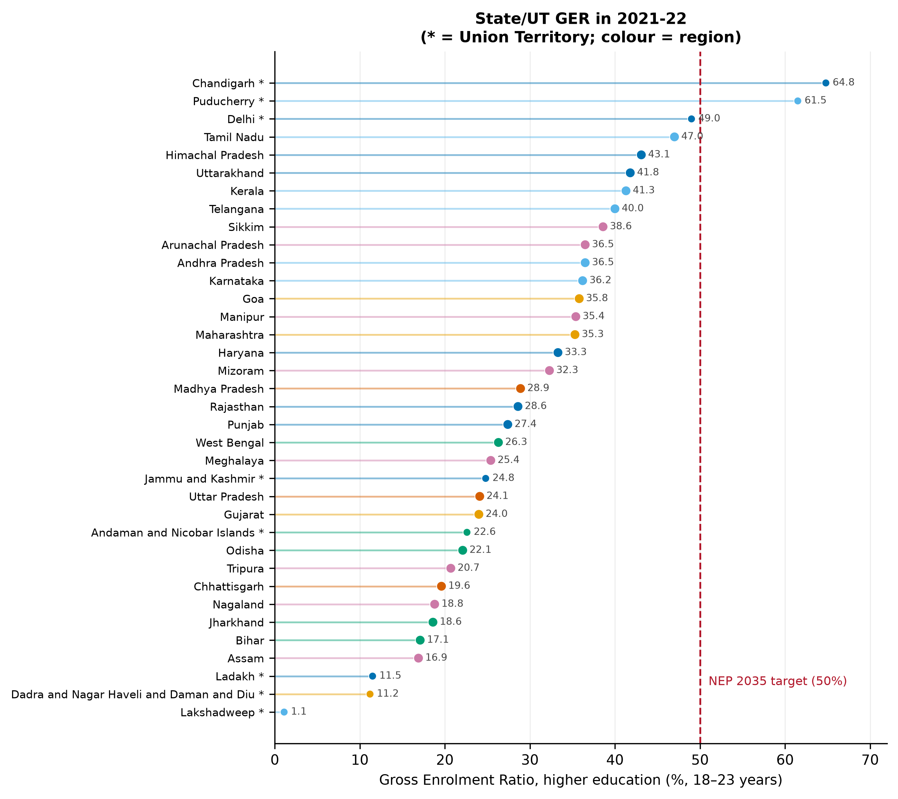
Figure 1 shows the full ranking of 36 units. Tamil Nadu (47.0), Himachal Pradesh (43.1), Uttarakhand (41.8), Kerala (41.3) and Telangana (40.0) lead the States. Assam (16.9), Bihar (17.1), Jharkhand (18.6), Nagaland (18.8), Chhattisgarh (19.6), Tripura (20.7), Odisha (22.1) and Uttar Pradesh (24.1) trail. The UTs are a separate distribution: Chandigarh (64.8), Puducherry (61.5) and Delhi (49.0) are high, while Dadra and Nagar Haveli and Daman and Diu (11.2) is the lowest unit in the file.
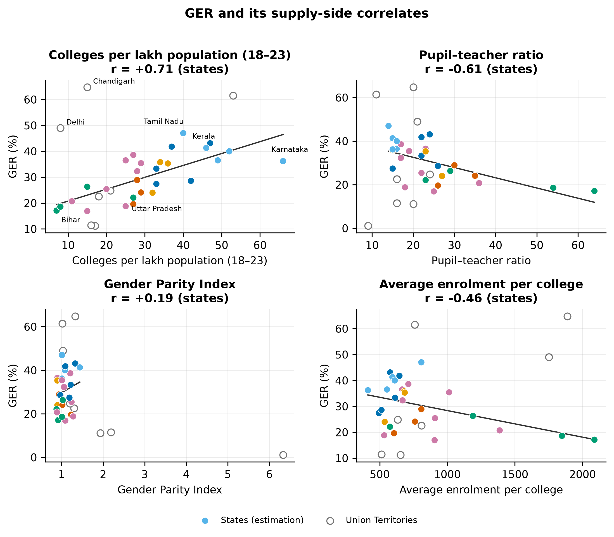
Figure 2 makes the bivariate patterns visible and also shows why a multivariate model is needed. The density relationship is tight but has notable exceptions: Karnataka has the highest density (66) but a GER of only 36.2, while Tamil Nadu reaches 47.0 with a density of 40. The PTR relationship is negative but is driven partly by the low-density, high-PTR States. The GPI panel is almost flat. Average enrolment per college is negatively related to GER, which is a warning that college size is not a quality proxy: Bihar combines the largest average college (2,088 students) with the lowest density and a GER of 17.1.
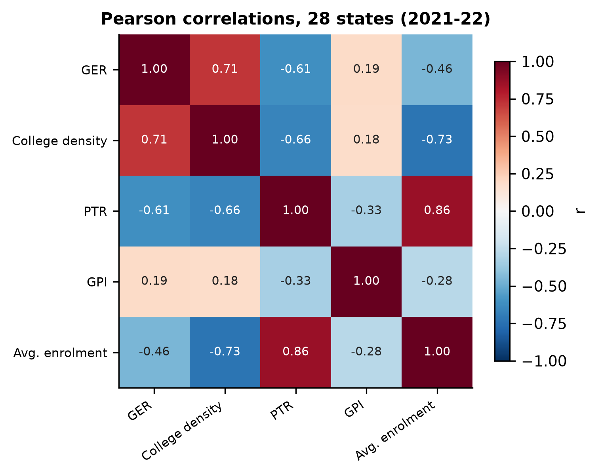
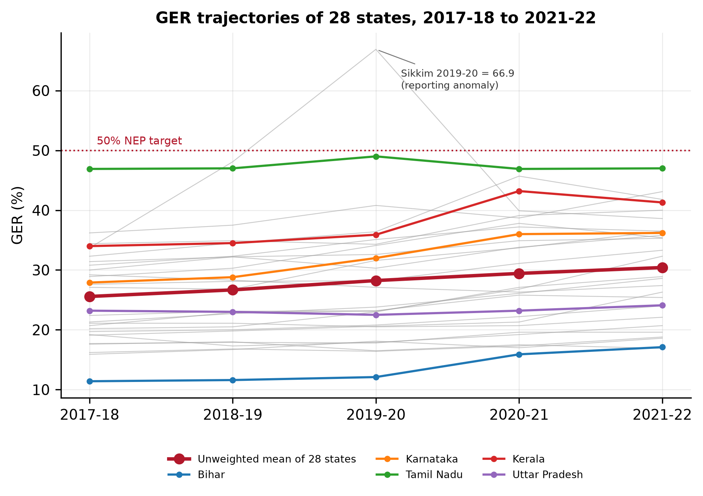
Figure 3 confirms the density–PTR collinearity and the weak GPI–GER association. Figure 4 shows that the level differences are persistent: the States at the top in 2017-18 are mostly at the top in 2021-22, and the bottom group improves from a lower base. This persistence is why a cross-sectional model has explanatory power and why a change-based projection is more defensible than a level forecast.
Table 5 reports the model comparison. The polynomial ridge model has the lowest LOOCV RMSE (5.96) and the highest LOOCV R² (0.525). OLS with college size is second (6.27; 0.474), followed by ridge with college size (6.42; 0.449), ridge with three indicators (6.74; 0.392) and OLS with three indicators (6.86; 0.370). The tuned tree (7.39; 0.269) and tuned k-NN (7.59; 0.229) are worse than OLS, despite much higher in-sample R² (0.702 and 0.660). The baseline is worst (8.97; −0.075).
Table 4. Hyper-parameter grids, selection rule and selected values. (table10_hyperparameter_search.csv)
| Model | Grid searched | Selection rule | Selected | Internal RMSE | Nested LOOCV RMSE |
|---|---|---|---|---|---|
| Ridge (3 indicators) | α in 61 log-spaced values, 10⁻³ to 10³ | RidgeCV generalised CV | α = 7.943 | 6.74 | 6.74 |
| Polynomial + ridge | degree ∈ {1,2,3}; α in 61 values | LOOCV for degree; RidgeCV for α | degree 2; α = 1.000 | 5.96 | 5.96 |
| k-NN (tuned) | k ∈ {3,5,7,9,11,15}; weights ∈ {uniform, distance} | GridSearchCV, LOOCV, RMSE | k = 3; uniform | 5.66 | 7.59 |
| Regression tree (tuned) | depth ∈ {2,3,4}; min leaf ∈ {3,5} | GridSearchCV, LOOCV, RMSE | depth 2; leaf 3 | 5.69 | 7.39 |
Table 4 is deliberately uncomfortable. The internal scores of the k-NN and tree searches (5.66 and 5.69) are much better than their nested LOOCV scores (7.59 and 7.39). The gap is the optimism of tuning and evaluating on the same 28 States. With n = 28, a grid search can always find a hyper-parameter that fits the sample; the nested protocol reveals that the gain does not generalise. This is one reason the linear model is retained for inference and projection even though it is not the best predictor.
Table 5. Model comparison, 28 States. LOOCV is the primary criterion; repeated five-fold CV is a stability check. (table03_model_comparison.csv)
| Model | LOOCV R² | LOOCV RMSE | LOOCV MAE | 5-fold RMSE (mean ± SD) | In-sample R² | Adj. R² |
|---|---|---|---|---|---|---|
| Polynomial deg 2 + ridge | 0.525 | 5.96 | 4.97 | 6.63 ± 0.73 | 0.730 | 0.696 |
| OLS (+ college size) | 0.474 | 6.27 | 4.82 | 6.58 ± 0.55 | 0.659 | 0.599 |
| Ridge (+ college size) | 0.449 | 6.42 | 4.95 | 6.81 ± 0.58 | 0.646 | 0.585 |
| Ridge (3 indicators) | 0.392 | 6.74 | 5.54 | 6.85 ± 0.25 | 0.528 | 0.469 |
| OLS (3 indicators) | 0.370 | 6.86 | 5.73 | 7.09 ± 0.37 | 0.543 | 0.486 |
| Regression tree (tuned) | 0.269 | 7.39 | 6.05 | 7.76 ± 0.69 | 0.702 | 0.665 |
| k-NN (tuned) | 0.229 | 7.59 | 6.52 | 7.32 ± 0.42 | 0.660 | 0.618 |
| Baseline (mean) | −0.075 | 8.97 | 7.95 | 9.00 ± 0.24 | 0.000 | −0.125 |
Three points stand out. First, every learned model beats the mean baseline, but the margin is modest for the three-indicator OLS: LOOCV R² is 0.370, not the 0.543 seen in-sample. The gap is expected with n = 28 and three predictors, and it is a warning against reading the fitted values as forecasts. Second, ridge slightly improves out-of-sample error relative to OLS (6.74 vs 6.86) and shrinks the density coefficient from 0.353 to 0.271. The ranking is not an artefact of one partition: the repeated five-fold RMSE is also lower for ridge (6.85 vs 7.09). Third, the polynomial is the best predictor but the worst model to extrapolate. Figure 11 shows why.
The augmented model with average enrolment per college improves LOOCV R² to 0.474, but average enrolment is mechanically related to GER: enrolment is the numerator of GER, and a State with a high GER can have a high average college size even if access is low. It is a robustness check, not the preferred specification.
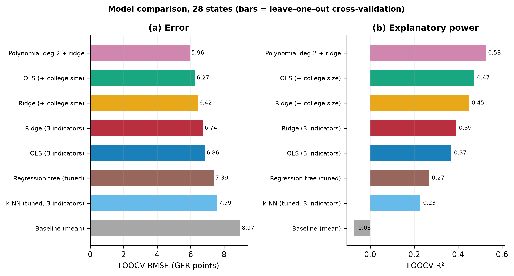
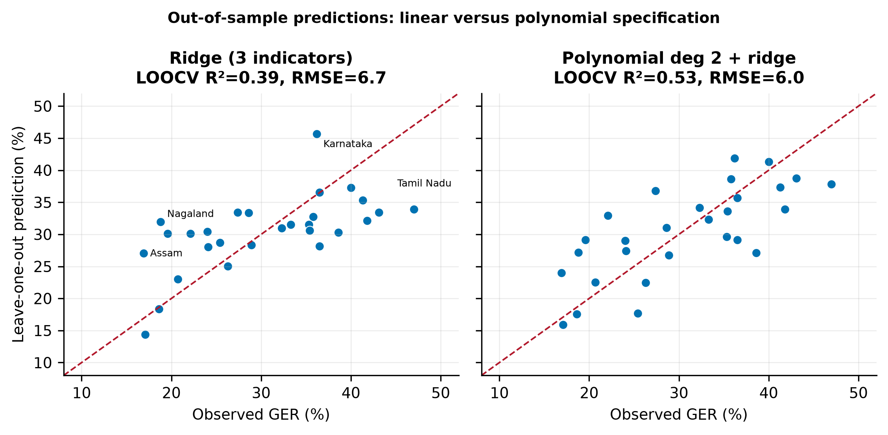
Figure 6 shows that both models under-predict Tamil Nadu (47.0) and over-predict Karnataka (36.2), the two most influential States. The errors are not random: they reflect omitted variables such as private provision, urbanisation and demand, which are not in the three-indicator model.
Table 6 reports the OLS coefficients with HC3 standard errors and bootstrap intervals. College density is the only coefficient that is statistically distinguishable from zero at conventional levels: +0.353 GER points per additional college per lakh (HC3 SE 0.161; p = 0.029; 95% bootstrap interval 0.112 to 0.656). The standardised coefficient is 0.547, the largest in the model. Conditional on PTR and GPI, a one-standard-deviation increase in density is associated with about half a standard deviation of GER.
Table 6. OLS coefficients, 28 States. HC3 standard errors; 95% percentile bootstrap intervals from 2,000 resamples. (table04_coefficients.csv)
| Term | Coefficient | HC3 SE | p-value | Bootstrap 95% CI | Standardised coefficient | VIF |
|---|---|---|---|---|---|---|
| College density | 0.353 | 0.161 | 0.029 | 0.112 to 0.656 | 0.547 | 1.78 |
| Pupil–teacher ratio | −0.189 | 0.152 | 0.211 | −0.637 to 0.027 | −0.247 | 1.93 |
| Gender Parity Index | 0.508 | 9.867 | 0.959 | −22.46 to 15.37 | 0.009 | 1.12 |
The PTR coefficient is negative but imprecise: −0.189 (p = 0.211), with a bootstrap interval that includes zero. More importantly, PTR is not exogenous. It is enrolment divided by teachers, so a State that expands enrolment without hiring teachers will mechanically show a higher PTR and a higher GER. The cross-sectional negative sign is therefore not a causal estimate of teacher quality. Section 6.5 shows that the sign flips in panel specifications.
The GPI coefficient is essentially zero and very imprecise: 0.508 (p = 0.959), with an interval from −22.5 to 15.4. Conditional on density and PTR, gender parity carries almost no independent information about the aggregate GER. This does not mean gender parity is unimportant. It means that the aggregate GER is not the right outcome for studying gender equity, and that most States are already close enough to parity that the remaining variation does not move the aggregate. Ten States remain below parity, and those gaps matter for female participation even when they do not shift the all-person GER.
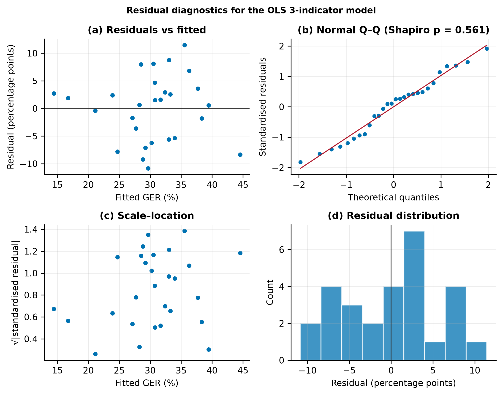
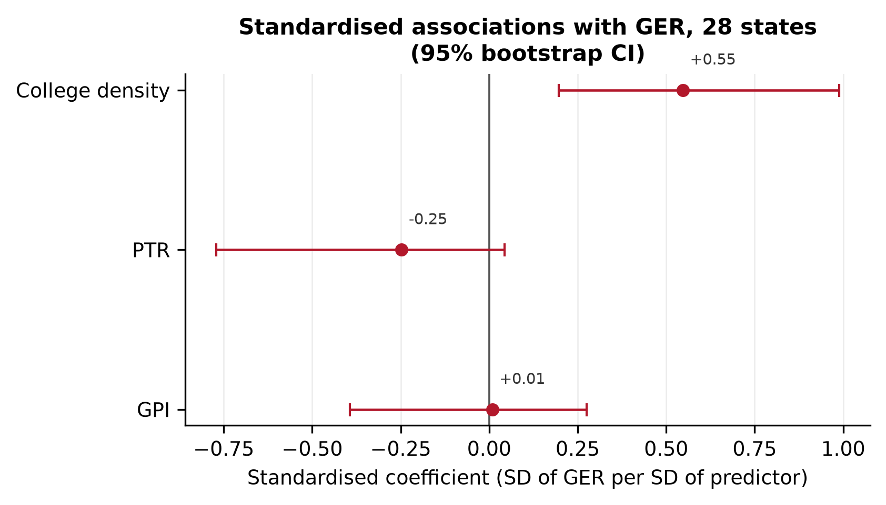
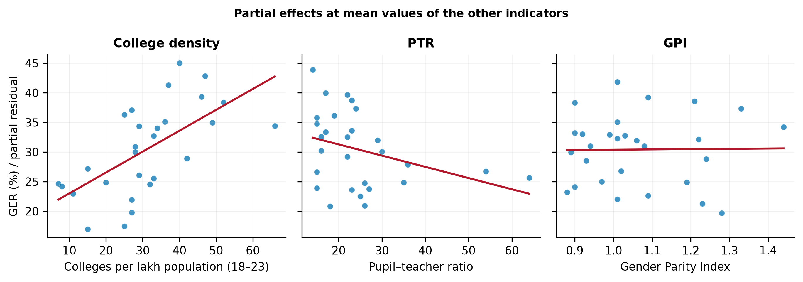
The OLS residuals are consistent with the classical assumptions (Table 7). Shapiro–Wilk does not reject normality (W = 0.969; p = 0.561), Breusch–Pagan does not reject homoskedasticity (LM = 3.05; p = 0.384), and Ramsey RESET does not reject the linear functional form (F = 0.021; p = 0.885). The condition number is 489, which is moderate for a model with three correlated predictors. No State has a studentised residual above 2 in absolute value.
Table 7. Residual diagnostics and influence, OLS three-indicator model. (table05_diagnostics.csv)
| Diagnostic | Statistic | p-value | Interpretation |
|---|---|---|---|
| Shapiro–Wilk (normality) | W = 0.969 | 0.561 | No evidence of non-normality |
| Breusch–Pagan (heteroskedasticity) | LM = 3.05 | 0.384 | No evidence of heteroskedasticity |
| Ramsey RESET (functional form) | F = 0.021 | 0.885 | No evidence of missed nonlinearity |
| Condition number | 489 | — | Moderate collinearity |
| Maximum Cook's distance | 0.338 | — | Karnataka; threshold 4/n = 0.143 |
| Influential States (Cook's D > 4/n) | 2 | — | Karnataka, Nagaland |
| Studentised residuals above 2 in absolute value | 0 | — | No severe outliers |
Two States are influential. Karnataka has Cook's distance 0.338 and leverage 0.338: it is the highest-density State (66 colleges per lakh) but has a lower GER than the model predicts (residual −8.35). Nagaland has Cook's distance 0.156 and the largest negative residual (−10.85). Tamil Nadu has the largest positive residual (+11.43) but low leverage, so its influence is smaller (Cook's D = 0.083).
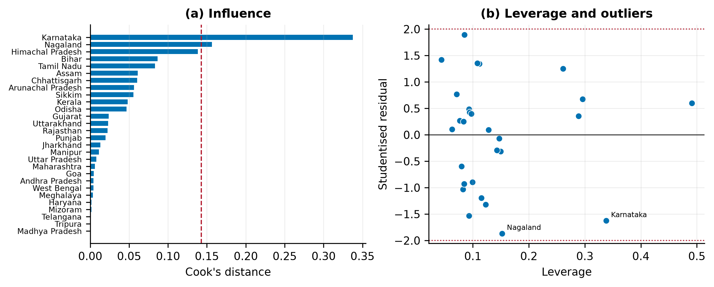
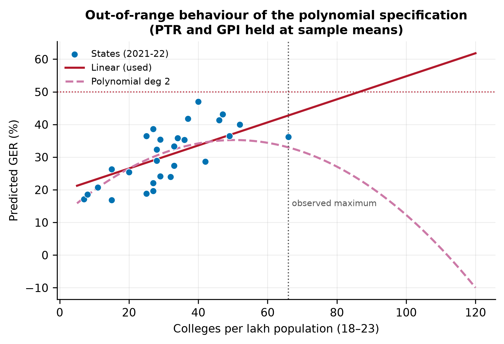
Table 8 reports the panel and leave-out checks. The density association is stable: 0.355 with year fixed effects, 0.398 with State and year fixed effects, and 0.752 in first differences. The first-difference estimate is larger, which suggests that within-State expansion is associated with larger GER gains than the cross-section alone implies. The short panel and measurement error caution against over-interpretation, but the sign and order of magnitude are consistent.
Table 8. Panel, leave-out and UT-inclusive specifications. (table07_sensitivity.csv)
| Specification | n | Density coefficient | PTR coefficient | GPI coefficient | R² / LOOCV R² |
|---|---|---|---|---|---|
| Cross-section OLS | 28 | 0.353 (p = 0.029) | −0.189 (p = 0.211) | 0.508 (p = 0.959) | R² = 0.543 |
| Panel, year FE | 140 | 0.355 | −0.215 | −0.846 | R² = 0.480 |
| Panel, year FE excluding Sikkim | 135 | 0.416 | −0.107 | +2.287 | R² = 0.585 |
| Panel, State + year FE | 140 | 0.398 | +0.343 | −26.98 | R² = 0.945 |
| First differences | 112 | 0.752 | +0.146 | −28.39 | R² = 0.395 |
| OLS excluding Karnataka | 27 | 0.474 (p = 0.001) | −0.136 (p = 0.350) | −1.245 (p = 0.892) | R² = 0.586; LOOCV R² = 0.457 |
| OLS excluding Karnataka + Bihar | 26 | 0.461 (p = 0.002) | −0.208 (p = 0.406) | −1.564 (p = 0.869) | R² = 0.555; LOOCV R² = 0.392 |
| All 35 units, core | 35 | — | — | — | LOOCV R² = 0.158 |
| All 35 units, core + UT dummy | 35 | — | — | — | LOOCV R² = 0.180 |
PTR is not robust. It is −0.215 in the year fixed-effects model but +0.343 with State fixed effects and +0.146 in first differences. The sign flip is exactly what one would expect from reverse causality and from the mechanical relationship between PTR and enrolment. A State that expands enrolment without matching teacher hiring will raise its PTR; a State that hires teachers without expanding enrolment will lower it. The cross-sectional negative correlation is therefore not a credible estimate of the effect of teacher supply.
GPI is also unstable and imprecisely estimated. The large negative coefficients in the State fixed-effects and first-difference models reflect limited within-State variation and collinearity, not a credible policy effect. The aggregate GER is simply not a good outcome for identifying gender-specific constraints.
The common annual trend from the year fixed-effects model is 0.866 GER points per year (SE 0.174). Over 14 years this is about 12.1 points, with a 95% interval of roughly 7.2 to 17.0 points. This trend is a key input to the projection and a major source of uncertainty. It is an average from a short, Covid-affected panel; it may not continue for 14 years, and it is unlikely to be the same in every State.
One series needs a caveat. Sikkim reports a GER of 66.9% in 2019-20, having reported 48.1% the year before and 39.9% the year after. A 27-point fall in one year is not a plausible change in participation; it is almost certainly a change in how the State reported enrolment or population. Sikkim is retained in the primary estimates because deleting a State for looking unusual is a judgement that should be made transparently rather than silently, and because the alternative would be to drop a genuine data point. As a check, the year fixed-effects model is re-estimated without Sikkim: the density coefficient rises to 0.416, the common trend falls only to 0.845 (SE 0.161), and R² rises from 0.480 to 0.585. The trend used in the projection, 0.866, is therefore not an artefact of the Sikkim series, and the density result is, if anything, stronger without it. Figure 4 annotates the observation.
The leave-out checks strengthen the density result. Excluding Karnataka raises the density coefficient to 0.474 (p = 0.001) and the in-sample R² to 0.586. Excluding Karnataka and Bihar gives 0.461 (p = 0.002) and R² = 0.555. The coefficient is larger without Karnataka because Karnataka is a high-density, low-GER outlier that pulls the slope down. The result does not depend on one or two States.
The UT-inclusive models perform much worse out of sample: LOOCV R² is 0.158 without a UT dummy and 0.180 with one, and RMSE is about 11.2–11.4. This confirms that UTs are not exchangeable with States and justifies the primary sample choice.
Table 9 summarises the three scenarios. Under the reference scenario (S2), 13 of 28 States reach 50% by 2035-36. Under the damped scenario (S1), only three do. The reform scenario (S3) also produces 13 crossings: PTR and GPI reforms raise the mean projection by about 1.2 points, but they do not move any additional State across the line.
Table 9. Scenario summary, 28 States. (table09_scenario_summary.csv; State detail in table06_projections_2035.csv)
| Scenario | Point estimate ≥ 50% | P(≥50%) ≥ 0.5 | Mean projected GER | Median | Min | Max | On track / at risk / off track |
|---|---|---|---|---|---|---|---|
| S1 Damped | 3 | 3 | 38.2 | 40.7 | 23.2 | 56.2 | 3 / 6 / 19 |
| S2 Recent trend (reference) | 13 | 13 | 45.8 | 49.5 | 28.5 | 65.3 | 13 / 3 / 12 |
| S3 NEP reform | 13 | 13 | 47.0 | 49.7 | 28.5 | 65.3 | 13 / 4 / 11 |
The 13 States reaching 50% under S2 are Tamil Nadu (65.3), Himachal Pradesh (57.7), Uttarakhand (53.9), Kerala (55.9), Telangana (53.4), Sikkim (56.9), Arunachal Pradesh (56.0), Karnataka (60.3), Goa (50.4), Manipur (51.2), Maharashtra (51.1), Mizoram (50.6) and Rajasthan (51.8). Three are at risk rather than off track: Andhra Pradesh (49.9; P = 0.49), Haryana (49.1; P = 0.47) and Madhya Pradesh (46.0; P = 0.29). The remaining 12 are off track: Punjab (39.5), West Bengal (42.1), Meghalaya (40.0), Uttar Pradesh (37.5), Gujarat (38.6), Odisha (39.2), Tripura (31.6), Chhattisgarh (35.4), Nagaland (28.5), Jharkhand (30.7), Bihar (29.2) and Assam (30.3).
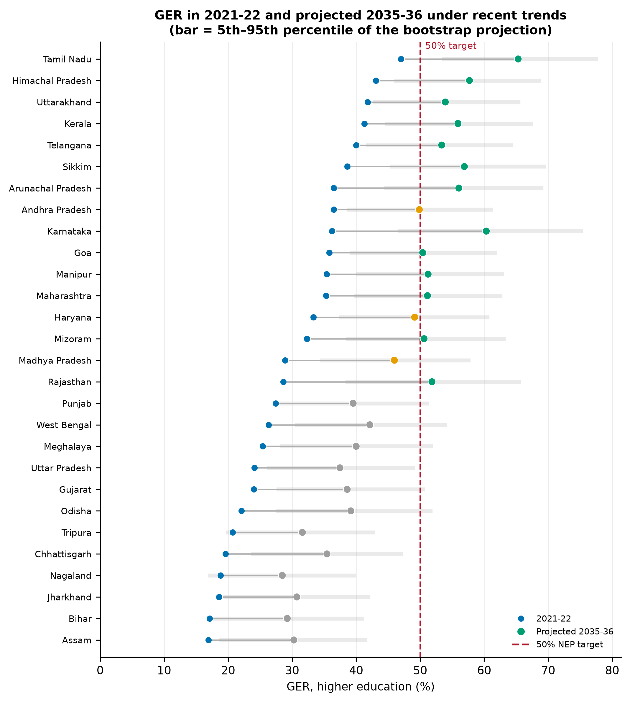
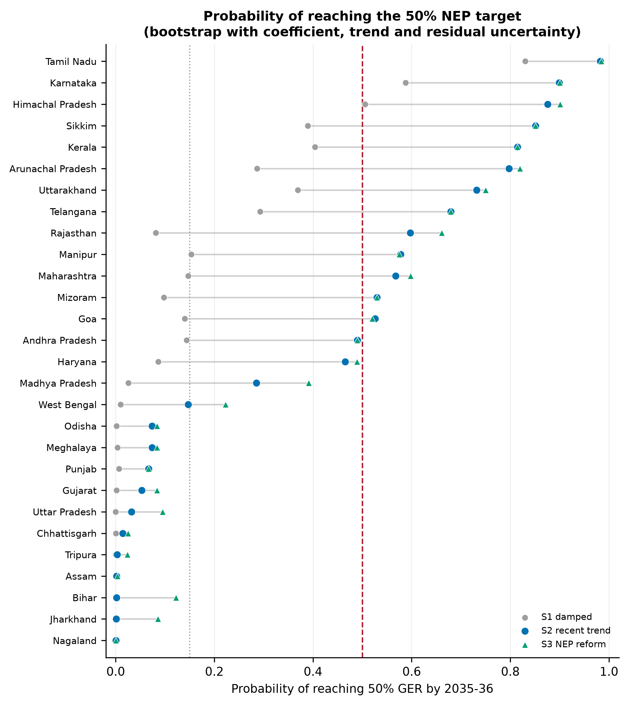
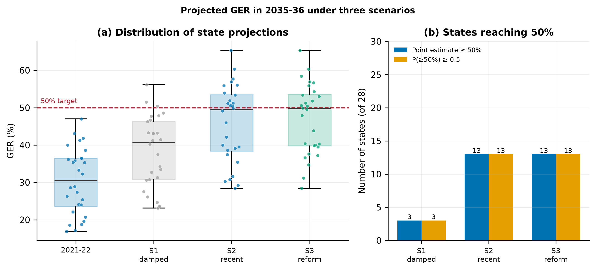
The uncertainty is large. For Tamil Nadu, the 5th–95th percentile interval is 53.7 to 77.4; for Bihar it is 17.9 to 40.9. The width reflects three sources: coefficient uncertainty (especially the density coefficient), trend uncertainty (0.866 ± 0.174 per year) and State-level residual variation (SD = 6.31). The probability ranking is therefore more informative than a single point forecast.
The population-weighted check is the central result. Using the implied 18–23 population as weights, the 28-State GER rises from 28.0% in 2021-22 to 35.9% under S1, 43.5% under S2 and 45.7% under S3 in 2035-36. Even the reference scenario leaves the population-weighted GER 6.5 points below the NEP target, and 68.6% of the 18–23 population lives in States projected below 50%. The unweighted count of 13 States overstates national progress because the States that are off track are the populous ones.
Table 10 reports the model-implied density required by 2035-36 under S2 for the ten largest gaps. The required annual changes are far above the observed 2017-22 changes in the low-density States. Bihar would need +4.2 colleges per lakh per year, against an observed change of zero; Uttar Pradesh +2.8 against +0.25; Assam +4.2 against +0.25; Jharkhand +3.9 against zero. Nagaland has the largest gap in density terms (61.1), but the smallest implied population, so the indicative college requirement is only about 170.
Table 10. Model-implied density required by 2035-36 under S2, ten largest gaps. (table08_required_density.csv)
| State | Density 2021 | Density 2035 (S2) | Required density | Gap | Required annual change | Observed annual change (2017-22) | Indicative additional colleges |
|---|---|---|---|---|---|---|---|
| Nagaland | 25 | 18.0 | 79.1 | 61.1 | +3.86 | −0.50 | 169 |
| Bihar | 7 | 7.0 | 65.9 | 58.9 | +4.20 | 0.00 | 9,184 |
| Assam | 15 | 18.5 | 74.4 | 55.9 | +4.25 | +0.25 | 2,264 |
| Jharkhand | 8 | 8.0 | 62.6 | 54.6 | +3.90 | 0.00 | 2,499 |
| Tripura | 11 | 7.5 | 59.7 | 52.2 | +3.48 | −0.25 | 256 |
| Chhattisgarh | 27 | 37.5 | 78.8 | 41.3 | +3.70 | +0.75 | 1,402 |
| Uttar Pradesh | 29 | 32.5 | 68.0 | 35.5 | +2.79 | +0.25 | 10,262 |
| Gujarat | 32 | 39.0 | 71.3 | 32.3 | +2.81 | +0.50 | 2,419 |
| Odisha | 27 | 41.0 | 71.7 | 30.7 | +3.19 | +1.00 | 1,478 |
| Punjab | 33 | 33.0 | 62.7 | 29.7 | +2.12 | 0.00 | 939 |
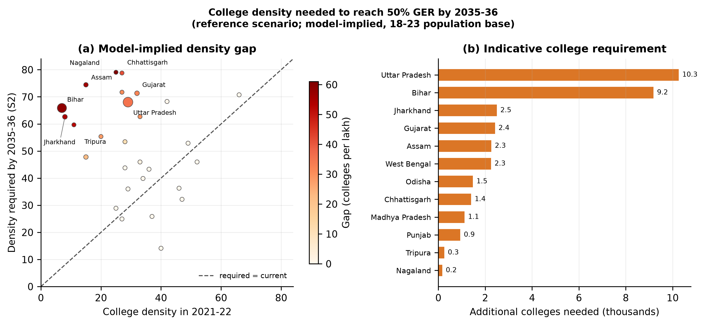
The indicative additional-college calculation gives the largest figures for Uttar Pradesh (about 10,300), Bihar (about 9,200), Jharkhand (2,500), Gujarat (2,400), Assam (2,300), West Bengal (2,300), Odisha (1,500), Chhattisgarh (1,400) and Madhya Pradesh (1,100). These figures are illustrative. They extrapolate the linear density coefficient far beyond the observed range and ignore teacher supply, funding, land and demand. They should be read as a signal of the scale of the gap, not as a costed plan.
A cautionary comparison is useful. Karnataka already has 66 colleges per lakh, roughly the density the model says Bihar needs, but its GER is 36.2%, not 50%. Density is therefore necessary but not sufficient. Demand, quality, programme mix and completion also matter. The required-density figures describe the capacity gap implied by the cross-sectional association; they do not guarantee that reaching that density will deliver 50%.
The UT appendix is indicative only, because UTs were outside the estimation sample. Applying the 28-State coefficients, Chandigarh (64.8) and Puducherry (61.5) are already above 50%; Delhi (49.0) is projected at 61.1 with P = 0.95; Jammu and Kashmir (24.8) at 34.5 with P = 0.01; the Andaman and Nicobar Islands (22.6) at 39.7 with P = 0.08; and Dadra and Nagar Haveli and Daman and Diu (11.2) at 17.7 with P ≈ 0. Ladakh and Lakshadweep are omitted because of missing predictors or an insufficient panel. The UT results should not be used for policy targeting without a separate city-catchment analysis.
The robust density association is consistent with an access story. States with more colleges per eligible population have lower travel and transaction costs, more programme choice and more competition, all of which can raise participation. The coefficient is conditional on PTR and GPI, but it may still pick up the fact that high-density States are richer or more urban. It is a cross-sectional association: States that build colleges may also be the States that invest in schools, roads and scholarships. The panel result, especially the larger first-difference coefficient, is reassuring but not decisive; a short panel cannot separate the effect of expansion from a simultaneous demand shock.
The PTR result is a cautionary tale. A negative bivariate correlation between PTR and GER is often read as evidence that teacher shortages depress enrolment. The panel shows that the sign is not stable. With State fixed effects and in first differences, the PTR coefficient becomes positive. This is consistent with reverse causality and with the mechanical definition of PTR. The appropriate conclusion is not that teachers do not matter, but that this design cannot identify their causal effect. A credible teacher-supply analysis would need instrumented or policy-induced variation in hiring, or administrative data linking teachers to institutions and programmes.
The GPI result is similarly nuanced. Ten States have GPI below 1.0, and gender gaps in higher education remain a serious equity concern. But the aggregate GER is already near parity in most States, and the remaining variation is not strongly associated with the aggregate once density and PTR are controlled. Gender parity should be evaluated with female GER, field-of-study segregation and completion as outcomes, not only as a regressor for the aggregate.
The reference scenario reaches 13 of 28 States, but the population-weighted GER is only 43.5%. The States below 50% include Bihar, Uttar Pradesh, Madhya Pradesh, Jharkhand, Assam, West Bengal and Odisha, which together account for a large share of the 18–23 population. A national target is not a count of States; it is a population-weighted outcome. The unweighted "13 of 28" therefore overstates progress.
The reform scenario is instructive. PTR convergence to 20 and GPI convergence to 1.05 raise the mean projection by about 1.2 points, but they do not move any additional State across the 50% line. In this model, the quality and parity levers are too small, and too imprecisely estimated, to close a 20-point gap. Density expansion and the secular participation trend do most of the work. This does not mean quality reforms are unimportant; it means they are unlikely to be sufficient on their own, and that a credible 2035 strategy needs a large capacity component in the low-density States.
Five implications follow, with the caveat that expansion without learning gains can leave graduates without the skills that higher education is meant to provide [7].
The model comparison is not a tournament in which the most flexible model wins. The polynomial has the best LOOCV error, but it is non-monotone outside the observed range and unsuitable for extrapolation. The tuned tree and k-NN have high in-sample R² but poor out-of-sample error, and their nested scores expose the optimism of tuning on 28 observations. OLS is not the best predictor, but it is within about 15% of the best RMSE, it is interpretable, and it supports the inference and projection that the policy question requires. This is a practical illustration of the distinction between prediction and explanation [23,24].
The 50% GER target is achievable for about half of the States under a continuation of recent trends, but not for the States that account for most of India's young population. College density is the most robust correlate of GER and the lever with the largest projected effect. PTR and GPI are important for quality and equity, but they do not carry independent explanatory power for the aggregate in this cross-section. The population-weighted GER is projected at 43.5% in 2035-36 under the reference scenario, 6.5 points short of the target, with 68.6% of the 18–23 population in States below 50%.
The policy message is twofold. First, the target is off track in the populous low-density States, and a national strategy that focuses on the already-high-GER States will not deliver it. Second, capacity expansion must be paired with teacher supply and equity policies, because the quality and parity levers in this model are too weak to close the gap on their own. A credible 2035 strategy needs a differentiated, State-specific mix of expansion, quality and equity, monitored with uncertainty rather than a single point forecast.
Future work should add meteorological and economic covariates, extend the panel beyond 2021-22, use institution-level or district-level data to reduce aggregation bias, and test whether the density association survives a credible identification strategy such as a policy-induced expansion programme. It should also model female GER and field-of-study segregation directly, rather than treating gender parity as a regressor for the aggregate.
Data availability. The target is the Open Government Data Platform India resource 7edbaeed-65e9-43ad-8f81-730187b70463 [3]. The predictors are from the AISHE 2021-22 Final Report [1]. The raw files, retrieval metadata and SHA-256 checksums are stored in data/raw/. The processed analysis files are in data/processed/, and the validation log is data/processed/extraction_validation.txt.
Code availability. The full pipeline is in src/, with src/run_all.py as the entry point. src/verify_outputs.py checks the headline numbers. The report source and build script are in report/. The code runs on Windows and Linux; README.md and run.sh document both.
Ethics. The data are aggregate administrative statistics with no personal information. The main ethical risk is over-reliance on a forecast: a missed target or a misallocated college budget can affect access for vulnerable groups. The uncertainty intervals and the limitations should be read as part of the result, not as a disclaimer.
Conflict of interest. The author declares no conflict of interest.
Funding. None.
Use of AI tools. An AI assistant (DeepSeek V4.1 Flash via OpenCode) was used to help draft and edit the report, to refactor parts of the analysis code, and to prepare the viva-study notes. All data extraction, model estimation, tables and figures were produced by the code in src/, and every number in this report was checked against the generated outputs with src/verify_outputs.py. The author reviewed the content and takes full responsibility for it.
[1] Ministry of Education, All India Survey on Higher Education 2021-22, Final Report. New Delhi, India: Department of Higher Education, Ministry of Education, Government of India, 2023.
[2] Ministry of Education, National Education Policy 2020. New Delhi, India: Government of India, 2020.
[3] Government of India, States/UT-wise Gross Enrolment Ratio (GER) in Higher Education Based on 2011 Population Census Projection for 18–23 Age Group during 2021-22. Open Government Data Platform India, resource 7edbaeed-65e9-43ad-8f81-730187b70463, 2025.
[4] Office of the Registrar General and Census Commissioner, Census of India 2011: Population Projections for India and States, 2011–2036. New Delhi, India: Government of India, 2019.
[5] P. Agarwal, Indian Higher Education: Envisioning the Future. New Delhi, India: Sage Publications, 2009.
[6] J. B. G. Tilak, Higher Education in India: In Search of Equality, Quality and Quantity. New Delhi, India: Orient BlackSwan, 2013.
[7] World Bank, World Development Report 2018: Learning to Realize Education's Promise. Washington, DC, USA: World Bank, 2018.
[8] T. Hastie, R. Tibshirani and J. Friedman, The Elements of Statistical Learning: Data Mining, Inference, and Prediction, 2nd ed. New York, NY, USA: Springer, 2009.
[9] G. James, D. Witten, T. Hastie and R. Tibshirani, An Introduction to Statistical Learning, 2nd ed. New York, NY, USA: Springer, 2021.
[10] F. Pedregosa et al., "Scikit-learn: Machine learning in Python," Journal of Machine Learning Research, vol. 12, pp. 2825–2830, 2011.
[11] M. Stone, "Cross-validatory choice and assessment of statistical predictions," Journal of the Royal Statistical Society: Series B, vol. 36, no. 2, pp. 111–147, 1974.
[12] H. White, "A heteroskedasticity-consistent covariance matrix estimator and a direct test for heteroskedasticity," Econometrica, vol. 48, no. 4, pp. 817–838, 1980.
[13] J. G. MacKinnon and H. White, "Some heteroskedasticity-consistent covariance matrix estimators with improved finite sample properties," Journal of Econometrics, vol. 29, no. 3, pp. 305–325, 1985.
[14] B. Efron and R. J. Tibshirani, An Introduction to the Bootstrap. New York, NY, USA: Chapman & Hall, 1993.
[15] R. D. Cook, "Detection of influential observation in linear regression," Technometrics, vol. 19, no. 1, pp. 15–18, 1977.
[16] S. S. Shapiro and M. B. Wilk, "An analysis of variance test for normality (complete samples)," Biometrika, vol. 52, no. 3/4, pp. 591–611, 1965.
[17] T. S. Breusch and A. R. Pagan, "A simple test for heteroscedasticity and random coefficient variation," Econometrica, vol. 47, no. 5, pp. 1287–1294, 1979.
[18] J. B. Ramsey, "Tests for specification errors in classical linear least-squares regression analysis," Journal of the Royal Statistical Society: Series B, vol. 31, no. 2, pp. 350–371, 1969.
[19] D. A. Belsley, E. Kuh and R. E. Welsch, Regression Diagnostics: Identifying Influential Data and Sources of Collinearity. New York, NY, USA: Wiley, 1980.
[20] A. E. Hoerl and R. W. Kennard, "Ridge regression: biased estimation for nonorthogonal problems," Technometrics, vol. 12, no. 1, pp. 55–67, 1970.
[21] A. C. Cameron and D. L. Miller, "A practitioner's guide to cluster-robust inference," Journal of Human Resources, vol. 50, no. 2, pp. 317–372, 2015.
[22] J. M. Wooldridge, Econometric Analysis of Cross Section and Panel Data, 2nd ed. Cambridge, MA, USA: MIT Press, 2010.
[23] S. Mullainathan and J. Spiess, "Machine learning: an applied econometric approach," Journal of Economic Perspectives, vol. 31, no. 2, pp. 87–106, 2017.
[24] S. Athey and G. W. Imbens, "Machine learning methods that economists should know about," Annual Review of Economics, vol. 11, pp. 685–725, 2019.
Table A1. Observed GER, leave-one-out prediction from the OLS three-indicator model, projected GER in 2035-36 under S2, and status for the 28 States. (table11_state_appendix.csv)
| State | GER 2021 | LOOCV prediction | LOOCV error | Density 2021 | Density 2035 | GER 2035 (S2) | 5th pct | 95th pct | P(≥50%) | Status |
|---|---|---|---|---|---|---|---|---|---|---|
| Tamil Nadu | 47.0 | 34.5 | +12.5 | 40 | 57.5 | 65.3 | 53.7 | 77.4 | 0.98 | On track |
| Himachal Pradesh | 43.1 | 33.9 | +9.2 | 47 | 54.0 | 57.7 | 46.2 | 68.5 | 0.88 | On track |
| Uttarakhand | 41.8 | 32.6 | +9.2 | 37 | 37.0 | 53.9 | 42.9 | 65.3 | 0.73 | On track |
| Kerala | 41.3 | 36.2 | +5.1 | 46 | 53.0 | 55.9 | 44.7 | 67.3 | 0.81 | On track |
| Telangana | 40.0 | 39.4 | +0.6 | 52 | 55.5 | 53.4 | 41.8 | 64.2 | 0.68 | On track |
| Sikkim | 38.6 | 29.5 | +9.1 | 27 | 44.5 | 56.9 | 45.6 | 69.4 | 0.85 | On track |
| Andhra Pradesh | 36.5 | 38.6 | −2.1 | 49 | 52.5 | 49.9 | 38.8 | 61.0 | 0.49 | At risk |
| Arunachal Pradesh | 36.5 | 27.5 | +9.0 | 25 | 46.0 | 56.0 | 44.7 | 68.9 | 0.80 | On track |
| Karnataka | 36.2 | 48.8 | −12.6 | 66 | 100.0 | 60.3 | 46.9 | 75.1 | 0.90 | On track |
| Goa | 35.8 | 33.0 | +2.8 | 34 | 41.0 | 50.4 | 39.3 | 61.7 | 0.53 | On track |
| Manipur | 35.4 | 30.4 | +5.0 | 29 | 39.5 | 51.2 | 40.3 | 62.8 | 0.58 | On track |
| Maharashtra | 35.3 | 32.1 | +3.2 | 36 | 46.5 | 51.1 | 40.0 | 62.5 | 0.57 | On track |
| Haryana | 33.3 | 31.6 | +1.7 | 33 | 43.5 | 49.1 | 37.6 | 60.5 | 0.47 | At risk |
| Mizoram | 32.3 | 30.7 | +1.6 | 28 | 45.5 | 50.6 | 38.6 | 63.0 | 0.53 | On track |
| Madhya Pradesh | 28.9 | 28.2 | +0.7 | 28 | 42.0 | 46.0 | 34.6 | 57.5 | 0.29 | At risk |
| Rajasthan | 28.6 | 34.6 | −6.0 | 42 | 73.5 | 51.8 | 38.6 | 65.4 | 0.60 | On track |
| Punjab | 27.4 | 33.5 | −6.1 | 33 | 33.0 | 39.5 | 28.4 | 51.1 | 0.07 | Off track |
| West Bengal | 26.3 | 23.7 | +2.6 | 15 | 25.5 | 42.1 | 30.7 | 53.9 | 0.15 | Off track |
| Meghalaya | 25.4 | 27.4 | −2.0 | 20 | 27.0 | 40.0 | 28.4 | 51.7 | 0.07 | Off track |
| Uttar Pradesh | 24.1 | 28.0 | −3.9 | 29 | 32.5 | 37.5 | 26.3 | 48.9 | 0.03 | Off track |
| Gujarat | 24.0 | 30.8 | −6.8 | 32 | 39.0 | 38.6 | 27.9 | 50.4 | 0.05 | Off track |
| Odisha | 22.1 | 30.1 | −8.0 | 27 | 41.0 | 39.2 | 27.8 | 51.6 | 0.07 | Off track |
| Tripura | 20.7 | 21.2 | −0.5 | 11 | 7.5 | 31.6 | 19.9 | 42.6 | 0.00 | Off track |
| Chhattisgarh | 19.6 | 29.8 | −10.2 | 27 | 37.5 | 35.4 | 23.9 | 47.0 | 0.01 | Off track |
| Nagaland | 18.8 | 31.6 | −12.8 | 25 | 18.0 | 28.5 | 17.1 | 39.6 | 0.00 | Off track |
| Jharkhand | 18.6 | 15.9 | +2.7 | 8 | 8.0 | 30.7 | 19.5 | 41.9 | 0.00 | Off track |
| Bihar | 17.1 | 11.8 | +5.3 | 7 | 7.0 | 29.2 | 17.9 | 40.9 | 0.00 | Off track |
| Assam | 16.9 | 25.8 | −8.9 | 15 | 18.5 | 30.3 | 18.9 | 41.4 | 0.00 | Off track |
python src/download_data.py — downloads the OGD JSON and the AISHE PDF and writes SHA-256 checksums.python src/extract_aishe.py — extracts AISHE Tables 4, 42, 47, 48 and 49 and writes extraction_validation.txt.python src/build_dataset.py — merges the OGD target with the AISHE predictors and derives the analysis variables.python src/eda.py — writes Tables 1–3 and Figures 1–4.python src/modeling.py — writes the model comparison, coefficients, diagnostics, sensitivity table, hyper-parameter table and Figures 5–11.python src/projection.py — writes the projections, required density, scenario summary, per-State appendix and Figures 12–15.python src/verify_outputs.py — checks the headline numbers against the stored outputs.python report/build_report.py — fills the author block from report/report_meta.json, writes report.md and report.html, and prints the PDF if a browser is available.All steps are deterministic given the raw files and RANDOM_STATE = 42. The pipeline can be run end to end with python src/run_all.py (or ./run.sh on Linux).